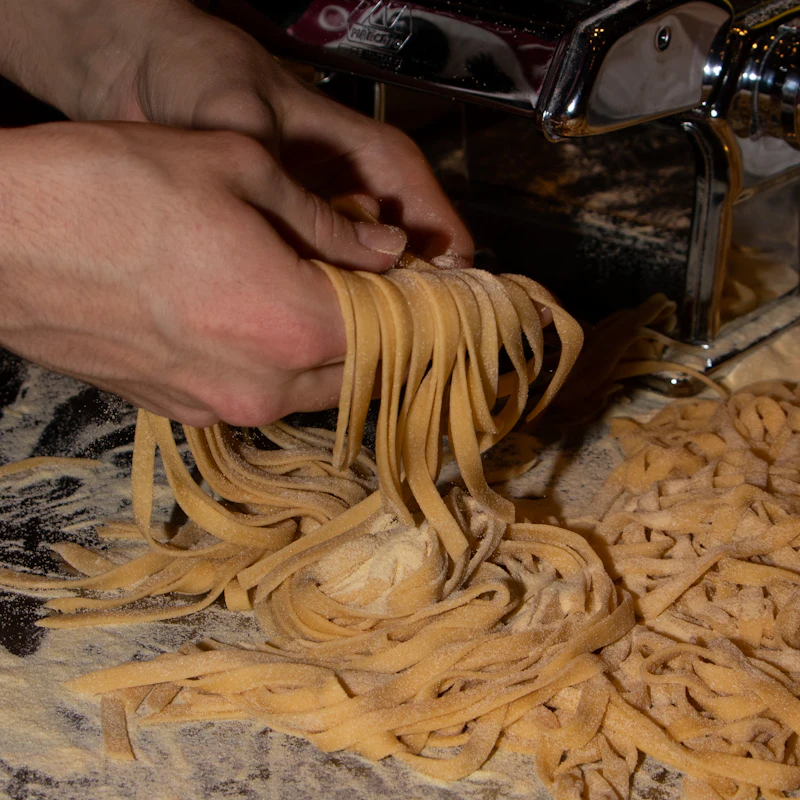
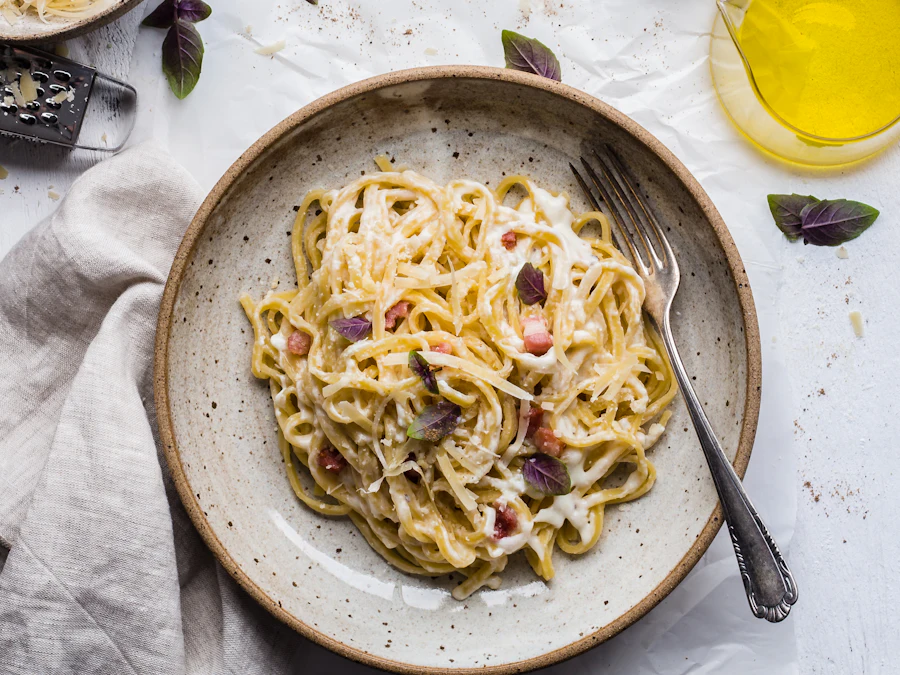
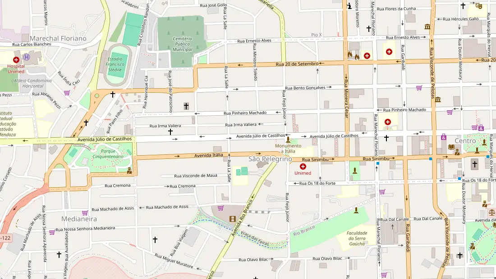

- Lunch Monday to Saturday, dinner Monday to Friday
- Avenida Júlio de Castilhos, 2802, São Pelegrino


Hours and address
| Monday | 11:30am to 2pm and 7pm to 10pm |
|---|---|
| Tuesday | 11:30am to 2pm and 7pm to 10pm |
| Wednesday | 11:30am to 2pm and 7pm to 10pm |
| Thursday | 11:30am to 2pm and 7pm to 10pm |
| Friday | 11:30am to 2pm and 7pm to 10pm |
| Saturday | 11:30am to 2pm |
| Sunday | Closed |

© OpenStreetMapOpen in OpenStreetMapAvenida Júlio de Castilhos, 2802São Pelegrino, Caxias do Sul
95010-005